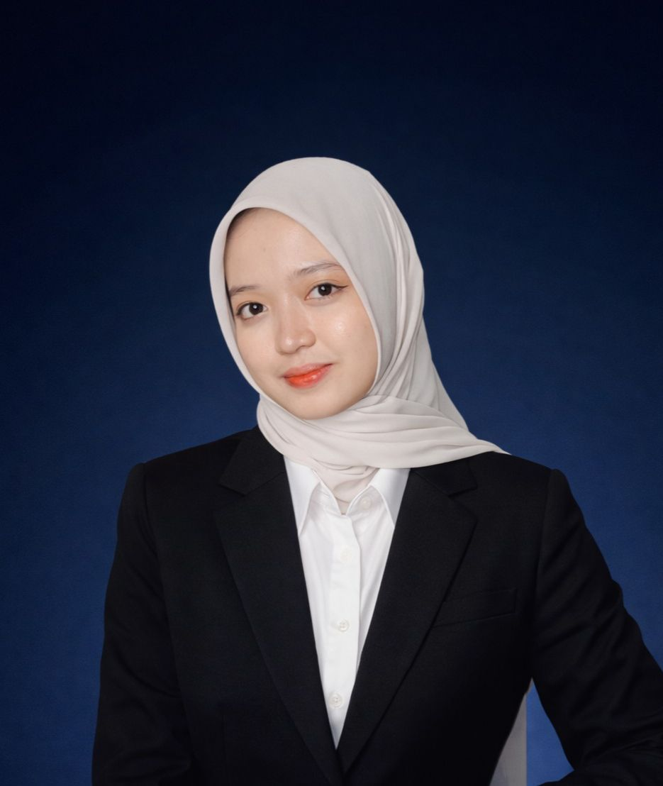
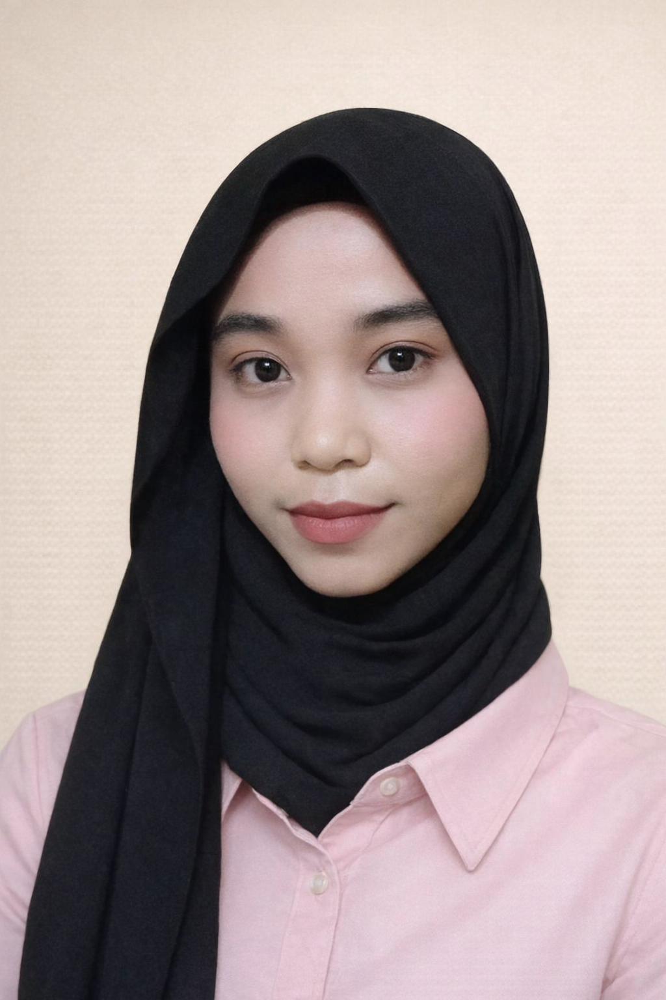
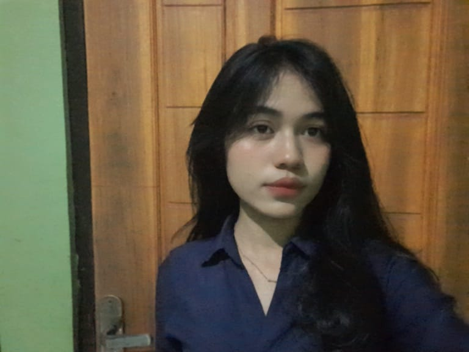
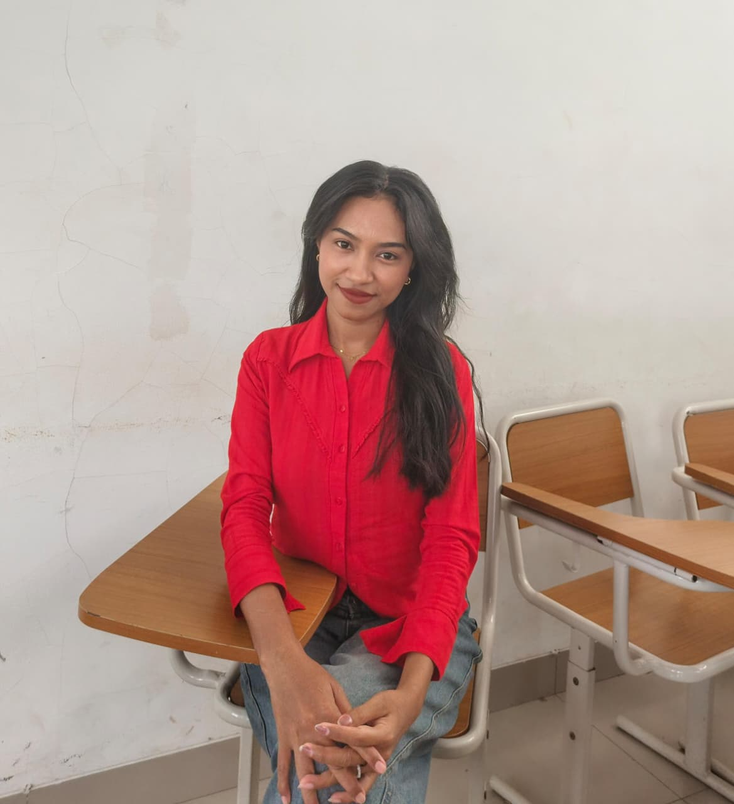

Our Team
Kelompok 3
Kelompok 3 merupakan tim mahasiswa Kelas 6B Program Studi Akuntansi, Fakultas Ekonomi dan Bisnis, Universitas Nusa Cendana yang dibentuk untuk memenuhi tugas pada mata kuliah Pemrograman Berbasis Web. Kelompok ini terdiri dari mahasiswa yang memiliki komitmen untuk mengembangkan pemahaman dan keterampilan dalam bidang teknologi informasi, khususnya dalam perancangan dan pengembangan aplikasi berbasis web yang relevan dengan kebutuhan dunia bisnis dan akuntansi.
Dalam pelaksanaan tugas, Kelompok 3 bekerja secara kolaboratif, sistematis, dan bertanggung jawab. Setiap anggota berkontribusi sesuai dengan peran dan kompetensinya, mulai dari tahap perencanaan, perancangan sistem, pengkodean (coding), pengujian (testing), hingga penyusunan laporan dan presentasi proyek. Melalui mata kuliah ini, kelompok tidak hanya berfokus pada aspek teknis pemrograman, tetapi juga pada penerapan sistem informasi berbasis web yang dapat mendukung efisiensi pengolahan data dan penyajian informasi akuntansi secara digital.
Dosen Pengampu: Bapak Markus Simeon K. Maubuthy, M.Pd
Program Studi: Akuntansi
Fakultas: Ekonomi dan Bisnis

NIM: 2310020073
Tempat Tanggal Lahir: Sumedang, 19 Mei 2005
Konsentrasi: Akuntansi Sektor Publik
Hobby: Membaca
Asal: Kota Kupang
Agama: Islam

Rania Intan Fadila
NIM: 2310020113
Tempat Tanggal Lahir: Bima, 20 Mei 2005
Konsentrasi: Audit
Hobby: Menyanyi
Asal: Kota Kupang
Agama: Islam
Nadya Kurnia Silalahi
NIM: 2310020094
Tempat Tanggal Lahir: Kupang, 21 September 2005
Konsentrasi: Audit
Hobby: Mendengar Musik dan Menyanyi
Asal: Kota Kupang
Agama: Kristen Protestan

Alexandra C. Dos Santos Lay
NIM: 2310020106
Tempat Tanggal Lahir: Atambua, 07 Juli 2004
Konsentrasi: Keuangan
Hobby: Nonton Film
Asal: Atambua
Agama: Katolik

Maria Ingka M. Muri
NIM: 2310020089
Tempat Tanggal Lahir: Larantuka, 18 April 2004
Konsentrasi: Keuangan
Hobby: Menulis
Asal: Larantuka
Agama: Katolik

Agustina Lipat Ola Lampaha
NIM: 2310020114
Tempat Tanggal Lahir: Waiwerang, 24 maret 2003
Konsentrasi: Keuangan
Hobby: Travelling
Asal: Adonara
Agama: Katolik